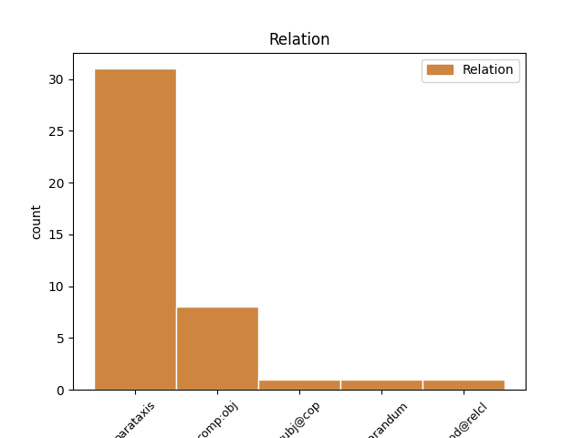
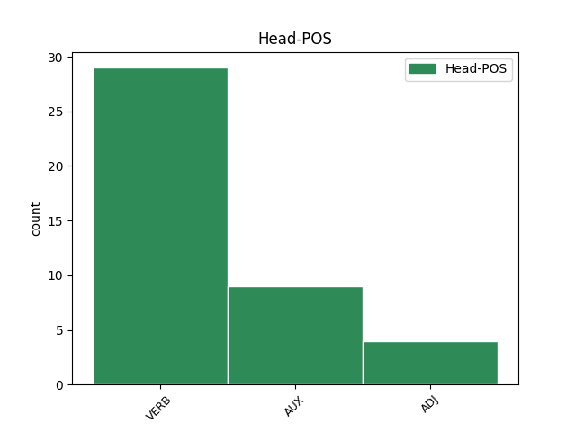
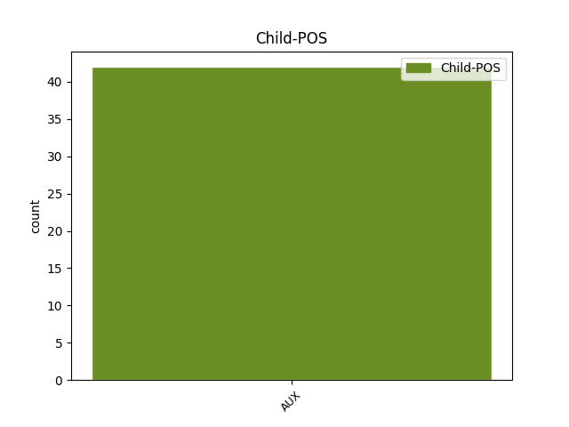

Distribution of features within this leaf



Agreement Rules sorted by frequency.
- When the dependent token is the parataxis(parataxis) of the head token, and the dependent token is AUX.
1 Tabasalulauri _ _ _ _ 0 _ _ _
2 kirjutas kirjutama VERB V Mood=Ind|Number=Sing|Person=3|Tense=Past|VerbForm=Fin|Voice=Act 0 _ _ _
3 : _ _ _ _ 0 _ _ _
4 kui _ _ _ _ 0 _ _ _
5 nüüd _ _ _ _ 0 _ _ _
6 õigesti _ _ _ _ 0 _ _ _
7 mäletan _ _ _ _ 0 _ _ _
8 siis _ _ _ _ 0 _ _ _
9 sama _ _ _ _ 0 _ _ _
10 probleem _ _ _ _ 0 _ _ _
11 oli olema AUX V Mood=Ind|Number=Sing|Person=3|Tense=Past|VerbForm=Fin|Voice=Act 2 parataxis _ _
12 ka _ _ _ _ 0 _ _ _
13 iphone _ _ _ _ 0 _ _ _
14 4s-il _ _ _ _ 0 _ _ _
15 . _ _ _ _ 0 _ _ _
1 Inimesed _ _ _ _ 0 _ _ _
2 , _ _ _ _ 0 _ _ _
3 kes _ _ _ _ 0 _ _ _
4 ei _ _ _ _ 0 _ _ _
5 tea teadma VERB V Connegative=Yes|Mood=Ind|Tense=Pres|VerbForm=Fin|Voice=Act 0 _ _ _
6 , _ _ _ _ 0 _ _ _
7 mis _ _ _ _ 0 _ _ _
8 on olema AUX V Mood=Ind|Number=Plur|Person=3|Tense=Pres|VerbForm=Fin|Voice=Act 5 comp:obj _ _
9 paanikahäire _ _ _ _ 0 _ _ _
10 , _ _ _ _ 0 _ _ _
11 ei _ _ _ _ 0 _ _ _
12 mõista _ _ _ _ 0 _ _ _
13 sageli _ _ _ _ 0 _ _ _
14 selle _ _ _ _ 0 _ _ _
15 olemust _ _ _ _ 0 _ _ _
16 . _ _ _ _ 0 _ _ _
1 Paljudel _ _ _ _ 0 _ _ _
2 juhtudel _ _ _ _ 0 _ _ _
3 on olema VERB V Mood=Ind|Number=Sing|Person=3|Tense=Pres|VerbForm=Fin|Voice=Act 0 _ _ _
4 see _ _ _ _ 0 _ _ _
5 on olema AUX V Mood=Ind|Number=Sing|Person=3|Tense=Pres|VerbForm=Fin|Voice=Act 3 reparandum _ _
6 lihtsalt _ _ _ _ 0 _ _ _
7 psüholoogiline _ _ _ _ 0 _ _ _
8 mõjutamine _ _ _ _ 0 _ _ _
9 . _ _ _ _ 0 _ _ _
1 see _ _ _ _ 0 _ _ _
2 aasta _ _ _ _ 0 _ _ _
3 aga _ _ _ _ 0 _ _ _
4 kolasid kolama VERB V Mood=Ind|Number=Plur|Person=3|Tense=Past|VerbForm=Fin|Voice=Act 0 _ _ _
5 igasugu _ _ _ _ 0 _ _ _
6 võõrad _ _ _ _ 0 _ _ _
7 mööda _ _ _ _ 0 _ _ _
8 telklat _ _ _ _ 0 _ _ _
9 , _ _ _ _ 0 _ _ _
10 kel _ _ _ _ 0 _ _ _
11 polnudki olema AUX V Mood=Ind|Polarity=Neg|Tense=Past|VerbForm=Fin|Voice=Act 4 mod@relcl _ _
12 sinna _ _ _ _ 0 _ _ _
13 asja _ _ _ _ 0 _ _ _
14 , _ _ _ _ 0 _ _ _
15 kui _ _ _ _ 0 _ _ _
16 ma _ _ _ _ 0 _ _ _
17 pühapäeva _ _ _ _ 0 _ _ _
18 hommikul _ _ _ _ 0 _ _ _
19 lahkusin _ _ _ _ 0 _ _ _
20 , _ _ _ _ 0 _ _ _
21 magasid _ _ _ _ 0 _ _ _
22 valvurid _ _ _ _ 0 _ _ _
23 ja _ _ _ _ 0 _ _ _
24 telklasse _ _ _ _ 0 _ _ _
25 võis _ _ _ _ 0 _ _ _
26 sisse _ _ _ _ 0 _ _ _
27 voorida _ _ _ _ 0 _ _ _
28 kes _ _ _ _ 0 _ _ _
29 tahes _ _ _ _ 0 _ _ _
30 asjad _ _ _ _ 0 _ _ _
31 on _ _ _ _ 0 _ _ _
32 nagu _ _ _ _ 0 _ _ _
33 ühest _ _ _ _ 0 _ _ _
34 äärmusest _ _ _ _ 0 _ _ _
35 teise _ _ _ _ 0 _ _ _
36 ?! _ _ _ _ 0 _ _ _
1 Huvitav huvitav ADJ A Case=Nom|Degree=Pos|Number=Sing|Tense=Pres|VerbForm=Part|Voice=Pass 0 _ _ _
2 mis _ _ _ _ 0 _ _ _
3 seos _ _ _ _ 0 _ _ _
4 on olema AUX V Mood=Ind|Number=Sing|Person=3|Tense=Pres|VerbForm=Fin|Voice=Act 1 subj@cop _ _
5 katkise _ _ _ _ 0 _ _ _
6 samsungi _ _ _ _ 0 _ _ _
7 ja _ _ _ _ 0 _ _ _
8 elisa _ _ _ _ 0 _ _ _
9 vahel _ _ _ _ 0 _ _ _
10 ... _ _ _ _ 0 _ _ _
Disagree Examples:
1 pani panema VERB V Mood=Ind|Number=Sing|Person=3|Tense=Past|VerbForm=Fin|Voice=Act 0 _ _ _
2 mingi _ _ _ _ 0 _ _ _
3 naeru _ _ _ _ 0 _ _ _
4 märgi _ _ _ _ 0 _ _ _
5 ka _ _ _ _ 0 _ _ _
6 veel _ _ _ _ 0 _ _ _
7 nii _ _ _ _ 0 _ _ _
8 vastik _ _ _ _ 0 _ _ _
9 on _ _ _ _ 0 _ _ _
10 olla _ _ _ _ 0 _ _ _
11 , _ _ _ _ 0 _ _ _
12 kooklis _ _ _ _ 0 _ _ _
13 ka _ _ _ _ 0 _ _ _
14 mingi _ _ _ _ 0 _ _ _
15 küikk _ _ _ _ 0 _ _ _
16 pelgavad _ _ _ _ 0 _ _ _
17 mind _ _ _ _ 0 _ _ _
18 jja _ _ _ _ 0 _ _ _
19 sosistavad _ _ _ _ 0 _ _ _
20 minu _ _ _ _ 0 _ _ _
21 ees _ _ _ _ 0 _ _ _
22 Mis _ _ _ _ 0 _ _ _
23 ma _ _ _ _ 0 _ _ _
24 neile _ _ _ _ 0 _ _ _
25 ütlema _ _ _ _ 0 _ _ _
26 pean pidama AUX V Mood=Ind|Number=Sing|Person=1|Tense=Pres|VerbForm=Fin|Voice=Act 1 parataxis _ SpaceAfter=No
27 ? _ _ _ _ 0 _ _ _
28 nad _ _ _ _ 0 _ _ _
29 ütlevad _ _ _ _ 0 _ _ _
30 mulle _ _ _ _ 0 _ _ _
31 migni _ _ _ _ 0 _ _ _
32 loll _ _ _ _ 0 _ _ _
33 sõber _ _ _ _ 0 _ _ _
34 ausõna _ _ _ _ 0 _ _ _
35 ! _ _ _ _ 0 _ _ _
1 " _ _ _ _ 0 _ _ _
2 Ajaxi _ _ _ _ 0 _ _ _
3 laul _ _ _ _ 0 _ _ _
4 - _ _ _ _ 0 _ _ _
5 carmen _ _ _ _ 0 _ _ _
6 , _ _ _ _ 0 _ _ _
7 ajaxi _ _ _ _ 0 _ _ _
8 laul _ _ _ _ 0 _ _ _
9 - _ _ _ _ 0 _ _ _
10 carmen _ _ _ _ 0 _ _ _
11 , _ _ _ _ 0 _ _ _
12 " _ _ _ _ 0 _ _ _
13 korrutas _ _ _ _ 0 _ _ _
14 ta _ _ _ _ 0 _ _ _
15 endamisi _ _ _ _ 0 _ _ _
16 " _ _ _ _ 0 _ _ _
17 Sepapoisid _ _ _ _ 0 _ _ _
18 - _ _ _ _ 0 _ _ _
19 oota ootama VERB V Mood=Imp|Number=Sing|Person=2|Tense=Pres|VerbForm=Fin|Voice=Act 0 _ _ _
20 , _ _ _ _ 0 _ _ _
21 mis _ _ _ _ 0 _ _ _
22 kurat _ _ _ _ 0 _ _ _
23 see _ _ _ _ 0 _ _ _
24 sepapoisid _ _ _ _ 0 _ _ _
25 nyyd _ _ _ _ 0 _ _ _
26 oligi olema AUX V Mood=Ind|Number=Sing|Person=3|Tense=Past|VerbForm=Fin|Voice=Act 19 parataxis _ _
27 .. _ _ _ _ 0 _ _ _
28 , _ _ _ _ 0 _ _ _
29 " _ _ _ _ 0 _ _ _
30 kui _ _ _ _ 0 _ _ _
31 järsku _ _ _ _ 0 _ _ _
32 juhtus _ _ _ _ 0 _ _ _
33 midagi _ _ _ _ 0 _ _ _
34 imelikku _ _ _ _ 0 _ _ _
35 . _ _ _ _ 0 _ _ _
1 Nt _ _ _ _ 0 _ _ _
2 : _ _ _ _ 0 _ _ _
3 Ma _ _ _ _ 0 _ _ _
4 tühistan _ _ _ _ 0 _ _ _
5 bussis _ _ _ _ 0 _ _ _
6 kuuldud kuuldud ADJ A Degree=Pos|Tense=Past|VerbForm=Part|Voice=Pass 0 _ _ _
7 ( _ _ _ _ 0 _ _ _
8 võid võima AUX V Mood=Ind|Number=Sing|Person=2|Tense=Pres|VerbForm=Fin|Voice=Act 6 parataxis _ _
9 kuupäeva _ _ _ _ 0 _ _ _
10 lisada _ _ _ _ 0 _ _ _
11 , _ _ _ _ 0 _ _ _
12 kui _ _ _ _ 0 _ _ _
13 soovid _ _ _ _ 0 _ _ _
14 ) _ _ _ _ 0 _ _ _
15 ennustust _ _ _ _ 0 _ _ _
16 minu _ _ _ _ 0 _ _ _
17 elu _ _ _ _ 0 _ _ _
18 kohta _ _ _ _ 0 _ _ _
19 5-6 _ _ _ _ 0 _ _ _
20 a _ _ _ _ 0 _ _ _
21 pärast _ _ _ _ 0 _ _ _
22 , _ _ _ _ 0 _ _ _
23 mil _ _ _ _ 0 _ _ _
24 peaks _ _ _ _ 0 _ _ _
25 midagi _ _ _ _ 0 _ _ _
26 negatiivset _ _ _ _ 0 _ _ _
27 juhtuma _ _ _ _ 0 _ _ _
28 . _ _ _ _ 0 _ _ _
1 Te _ _ _ _ 0 _ _ _
2 mõistate _ _ _ _ 0 _ _ _
3 hukka _ _ _ _ 0 _ _ _
4 naisterahvast _ _ _ _ 0 _ _ _
5 keda _ _ _ _ 0 _ _ _
6 te _ _ _ _ 0 _ _ _
7 ise _ _ _ _ 0 _ _ _
8 ei _ _ _ _ 0 _ _ _
9 tunnegi _ _ _ _ 0 _ _ _
10 ja _ _ _ _ 0 _ _ _
11 ei _ _ _ _ 0 _ _ _
12 teagi teadma VERB V Connegative=Yes|Mood=Ind|Tense=Pres|VerbForm=Fin|Voice=Act 0 _ _ _
13 mis _ _ _ _ 0 _ _ _
14 olid olema AUX V Mood=Ind|Number=Plur|Person=3|Tense=Past|VerbForm=Fin|Voice=Act 12 comp:obj _ _
15 tema _ _ _ _ 0 _ _ _
16 kavatsused _ _ _ _ 0 _ _ _
17 . _ _ _ _ 0 _ _ _
1 Siin _ _ _ _ 0 _ _ _
2 oli olema AUX V Mood=Ind|Number=Sing|Person=3|Tense=Past|VerbForm=Fin|Voice=Act 0 _ _ _
3 ju _ _ _ _ 0 _ _ _
4 lehtedest _ _ _ _ 0 _ _ _
5 laia _ _ _ _ 0 _ _ _
6 seakisa _ _ _ _ 0 _ _ _
7 kuulda _ _ _ _ 0 _ _ _
8 kui _ _ _ _ 0 _ _ _
9 Kangro _ _ _ _ 0 _ _ _
10 oma _ _ _ _ 0 _ _ _
11 eluruumid _ _ _ _ 0 _ _ _
12 ärastas _ _ _ _ 0 _ _ _
13 - _ _ _ _ 0 _ _ _
14 mis _ _ _ _ 0 _ _ _
15 jutt _ _ _ _ 0 _ _ _
16 see _ _ _ _ 0 _ _ _
17 üürilepingust _ _ _ _ 0 _ _ _
18 siin _ _ _ _ 0 _ _ _
19 veel _ _ _ _ 0 _ _ _
20 on olema AUX V Mood=Ind|Number=Plur|Person=3|Tense=Pres|VerbForm=Fin|Voice=Act 2 parataxis _ SpaceAfter=No
21 ? _ _ _ _ 0 _ _ _